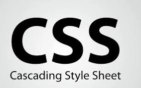

Cascading Style SheetsAbout Cascading Style SheetsCascading Style Sheets (CSS) is a style sheet language used for describing the look and formatting of a document written in a markup language.
While most often used to change the style of web pages and user interfaces written in HTML and XHTML, the language can be applied to any kind
of XML document, including plain XML, SVG and XUL. Along with HTML and JavaScript, CSS is a cornerstone technology used by most websites to
create visually engaging webpages, user interfaces for web applications, and user interfaces for many mobile applications.
CSS is designed primarily to enable the separation of document content from document presentation, including elements such as the layout, colors,
and fonts. This separation can improve content accessibility, provide more flexibility and control in the specification of presentation
characteristics, enable multiple HTML pages to share formatting by specifying the relevant CSS in a separate .css file, and reduce complexity
and repetition in the structural content, such as semantically insignificant tables that were widely used to format pages before consistent
CSS rendering was available in all major browsers. CSS makes it possible to separate presentation instructions from the HTML content in a
separate file or style section of the HTML file. For each matching HTML element,
it provides a list of formatting instructions. For example, a CSS rule might specify that "all heading 1 elements should be bold,"
leaving pure semantic HTML markup that asserts "this text is a level 1 heading" without formatting code such as a Browser supportBecause not all browsers correctly parse CSS code, developed coding techniques known as CSS hacks can either filter specific browsers or target specific browsers (generally both are known as CSS filters). The former can be defined as CSS filtering hacks and the latter can be defined as CSS targeting hacks. Both can be used to hide or show parts of the CSS to different browsers. This is achieved either by exploiting CSS-handling quirks or bugs in the browser, or by taking advantage of lack of support for parts of the CSS specifications. Using CSS filters, some designers have gone as far as delivering different CSS to certain browsers to ensure designs render as expected. Because very early web browsers were either completely incapable of handling CSS, or rendered CSS very poorly, designers today often routinely use CSS filters that completely prevent these browsers from accessing any of the CSS. Internet Explorer support for CSS began with IE 3.0 and increased progressively with each version. By 2008, the first Beta of Internet Explorer 8 offered support for CSS 2.1 in its best web standards mode..  Click on the Image to view the complete CSS Tutorial |